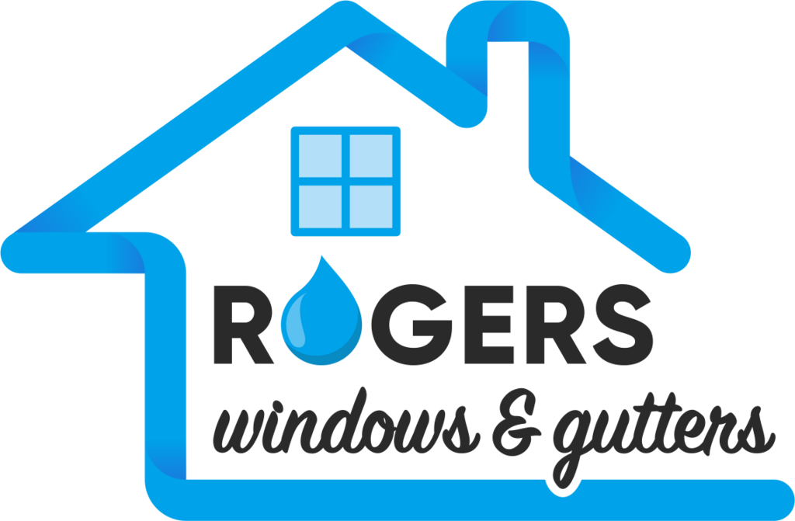

- About
- Services
- 
- Contact
- Testimonials
PRESSURE WASHING
for homes and businesses in the south bay area.
We offer professional pressure washing services for your home, apartment or business.
As one of the premier pressure washing services in the bay area, we have the necessary experience and resources to help our customers no matter their requirements. With years of experience using eco-friendly products and professional grade cleaning tools, we ensure the beauty of your property with surfaces that sparkle and last.
Having clean gutters, roofs, and solar panels is an important part of a clean and well maintained space, which we are always happy to help with. Equally important, however, is the quality pressure washing of your home, apartment, or business! There are many substances that sit on surfaces causing harm and corrosion for every kind of material. Concrete, wood, metal, and plastic all have their vulnerabilities when coated in residues such as mold, algae, grime, oil, dirt, rust, and other materials. It's important to regularly keep various parts of your home or building free from these contaminants in order to ensure your place looks beautiful and clean while also maximizing longevity. With years of experience pressure washing in the Bay Area, we understand what is needed and what to look for to make sure your place is properly taken care of while being thoroughly washed of all debris. There is nothing like seeing your home with sparkling windows, water-glazed surfaces, shiny solar panels, and removed cobwebs and moss.


What we do for our customers
Rogers Windows and Gutters can serve a variety of customer needs, with spaces such as homes, car dealerships, apartments, businesses, and offices. We do pressure washing on diverse surfaces such as decks, driveways, sidewalks, backyards, curbs, infrastructure areas, windows, and roofs. If you have a need not mentioned, we pride ourselves on our flexibility and adaptation, and will find something that works best for you.
The Benefits of Pressure Washing
Clean surfaces last longer!
Regular pressure washing can improve the longevity of your home surfaces. Moss can corrode wood or stain surfaces. Oil and other chemicals can stain cement. Dirt can corrode paint, wood and other materials.
Better home value
A thorough power washing will help ensure your home has the best possible value. We take good care to make sure your home looks new after we are finished, with clean surfaces that increase the attractiveness of your home, apartment or business.
Lowers risks and hazards
Having dirty surfaces can cause risks to those who walk over them. Cement coated with oil can be slick, causing falls; Wood and other surfaces with algae and moss can also be dangerous. Regular cleaning will lower risks for all involved.